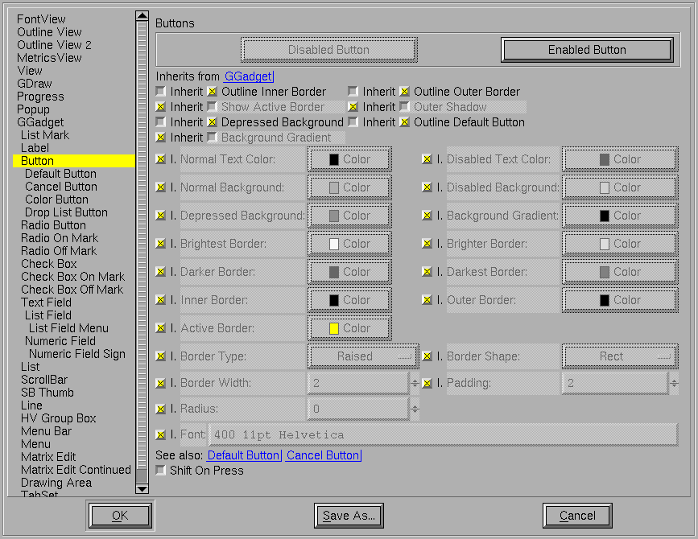
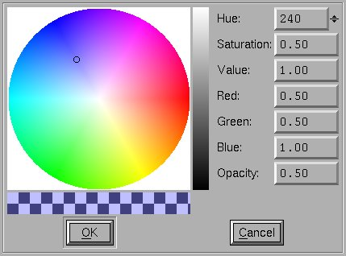

This dialog allows you to control the look and feel of FontForge. You can control (most of) the same resources described in the X Resource page, but in (I hope) a more convenient format. Some changes will be reflected instantly, other changes require refreshing the screen, other changes require invoking a new dialog, and some changes you must save the resources and restart fontforge.
To the left of the dialog is a list of all fontforge's controls (and some other stuff). Every control is drawn within a box, and the box specifies a background, border, shape, size... Many controls have an associated font. Most controls inherit much of their design from other controls (The GGadget, which is an abstract control, is the root of the hierarchy). A particular attribute may be inherited from its parent, or it may be defined by the current control.
Other controls may depend on the current one, changes to the current control may affect those others if the attribute changed is inherited.
The top of the pane identifies the current control, and describes the parent of the current control (you may click on the "Inherits from" entry to change the pane to view that control). Often there are some examples of the control, generally an enabled and disabled version.
Beneath this are the actual data. First the data describing the box. There are a series of flags
Then come a series of colors. Different colors may be specified for enabled and disabled controls. The border has four different colors, for the brightest, mid bright, mid dark and darkest edges of the control. Where each of the border colors is used depends on the border type.
The peculiar button, , is a color button. It displays the current color in a rectangle, and, if pressed, invokes a color picker dialog.

The color picker displays a Hue/Saturation/Value color wheel. A vertical bar on the right shows the Value, the wheel shows Hue and Saturation. The original color is displayed on the bottom left. The current color on the bottom right. If the color is not fully opaque a checker board of black and white squares will be visible under the colors.
Not all colors support opacities (only those drawn on the cairo canvas), and for many colors the Opacity control will be hidden (and fixed at 1.0).
Underneath the colors are ways of specifying the shape and type of the border, how wide it is, whether there is any padding between the border and the inner part of the control, and (for borders with a round-rectangle shape) the radius of the circle used to round the corners (a radius of 0 means: half the height of the control -- actually half the smaller dimension of the control).
Finally we come to the font used in the control. This is specified by a number (between 0 and 1000) specifying the weight of the font (400 is normal, 700 is bold), a point size, and a comma separated list of font family names. Changing the font will not have any obvious effect until you restart the dialog.
That specifies the standard box used to draw each control. Some controls have additional resources. The Button control above contains an additional boolean resource which (if set) will cause the text of the button to shift slightly right when the button is pressed. (This is another of those resources where you must restart the dialog to see it take effect).
If you press the [OK] button then your current resource settings will be used in subsequent dialogs created by FontForge -- but any changes you make will vanish when you exit. If you press the [Save] button then your changes will be saved to disk, and (optionally) used the next time you start fontforge.